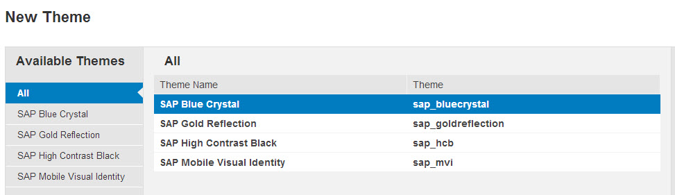
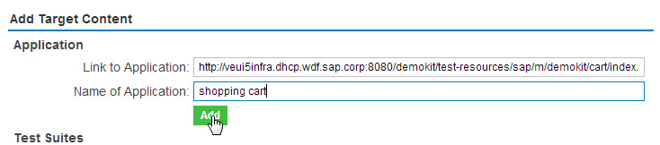
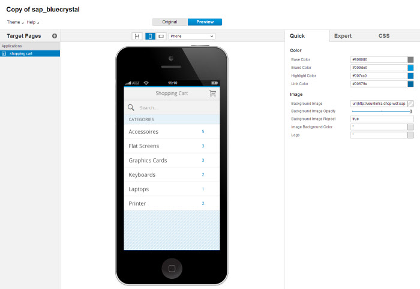
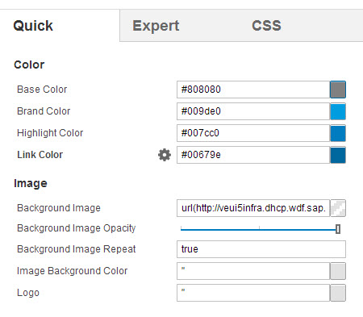
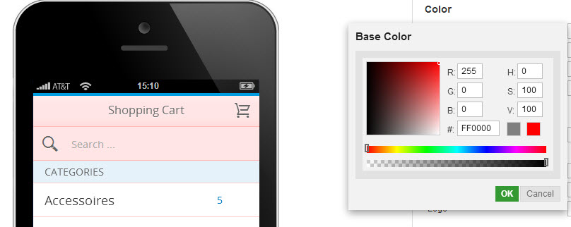
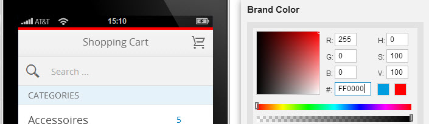
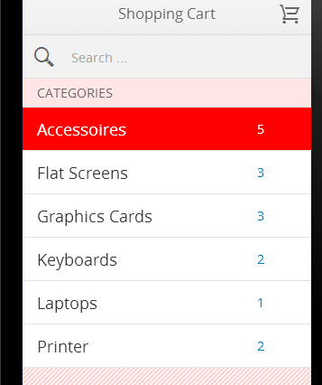
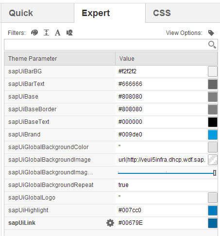
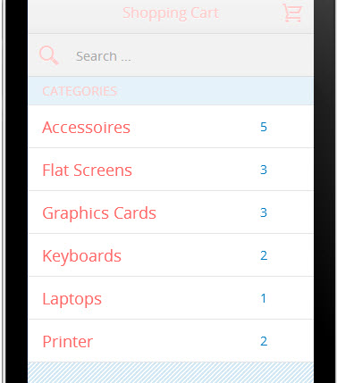

Theming sap.m
Currently, we provide 2 major themes (SAP Mobile Visual Identity and Blue Crystal) for the sap.m library. If you want to modify a certain part of our controls to visually accommodate your application needs, this can be easily done with the Theme Designer.
Your step by step guide to theme your application
- Open the Theme Designer in a WebKit browser.
- Choose the theme you want to start as the basis with. Here, we will choose SAP Blue Crystal as an example. 
- Then you put in the application you want to style. In our case, we are taking the shopping cart application.
- Link to Application: http://veui5infra.dhcp.wdf.sap.corp:8080/uilib-sample/test-resources/sap/m/demokit/cart/index.html
- Name of Application: give a name you wish, we take "shopping cart" here to keep it consistent.

- Now you should end up in the theme designer with a preview screen in the middle and, on the right hand side, a list of theme parameters you can use to adjust the current application you have specified.

Explanation of theme parameters
- Here, we want to focus on the different theme parameters and explain what effect each of them have.
Quick Panel
- These are the most commonly used color parameters of the currently selected theme as well as image related parameters in the quick panel.

- Base Color: It is used as base for many screen elements, including backgrounds, texts and borders. For example, if you change this color to bright red (#FF0000), you will see that the bar background as well as the border color of the list have been adjusted accordingly.

- Brand Color: This is the basic branding color of the theme. In our example, if you change the brand color to bright red (#FF0000), you will see that the top branding bar has changed its color from blue to red.

- Highlight Color: This parameter is used for highlighted screen elements. In our example, if you change the highlight color to bright red (#FF0000), you will see that the list header as well as the background highlight color are changed. When you click on the list, you will notice the highlight color is changed there too.

- Link Color: This is the color used for links.
- Background Image: Here, you can set your own background image to the app.
- Background Image Opacity: This parameter is only relevant if you have set a background Image, then it will change the translucency of the image.
- Background Image Repeat: This parameter by default is set to true for blue crystal theme and you can change it to false if you want to display 1 big image without repeating it.
- Image Background Color: This is the color that is behind the global background image.From our example, if you change the background color to bright red (#FF0000), you will see the background color is updated accordingly.
- Logo: You can define a logo image which can be used for branding. It may only appear in desktop browsers when the screen/window is large enough.
Expert Panel
- If you want to change more than what the quick panel could offer, you can switch to the expert panel. There you have more refined parameters to adjust the application.

- sapUiBarBG: This is the parameter to adjust the header bar background color.
- sapUIBarText: If you want to just change the bar title text, you can use this parameter for it.
- sapUIBase: This is the same as the "Base Color" in Quick Panel.
- sapUIBaseBorder: If you want to only change the border color, but not other base color, you can do that with this parameter.
- sapUIBaseText: This is the parameter to change the base color of text, this also change the color of icons, where icon font is used.

- sapUIBrand: This is the same as the "Brand Color" in Quick Panel.
- sapUIGlobalBackgroundColor: This is the same as the "Image Background Color" in Quick Panel.
- sapUIGlobalBackgroundImage: This is the same as the "Background Image" in Quick Panel.
- sapUIGlobalBackgroundRepeat: This is the same as the "Background Image Repeat" in Quick Panel.
- sapUiGlobalLogo: This is the same as the "Logo" in Quick Panel.
- sapUIHighlight: This is the same as the "Highlight Color" in Quick Panel.
- sapUILink: This is the same as the "Link Color" in Quick Panel.
CSS Panel
- In this panel, you can write your custom css to adjust style according to your needs.